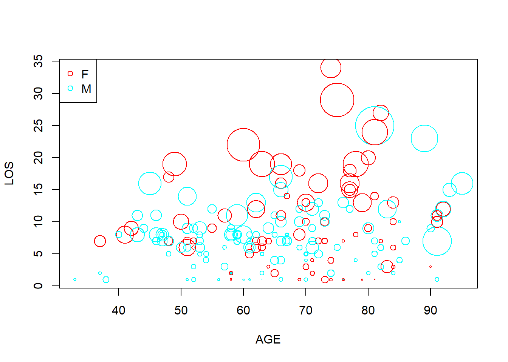

Chapter 5 The heart attack data set (I)
The heart attack data set (http://statland.org/R/RC/tables4R.htm), included in the ActivStats1 CD, contains all 12,844 cases of hospital discharges of the patients admitted for heart attack but did not have surgery in New York State in 1993. This information is essential for the interpretation of our results, as this is a purely observational study. It is not a random sample or controlled experiment.
The data set is formatted as a table (Table 5.1) with rows representing cases and columns representing characteristics, which is a typical format for many datasets. If you download and open the file in NotePad++ or Excel, you can see that the columns are separated by tabs, and there are missing values noted by “NA”. Four columns (DIAGNOSIS, SEX, DRG, DIED) contain nominal values, representing labels of categories. See an excellent explanation of data types here. DIAGNOSIS column contains codes defined in the International Classification of Diseases (IDC), 9th Edition. This is the code that your doctor sends to your insurance company for billing. The numbers, such as 41041, actually code for which part of the heart was affected. Although these are numbers, it does not make any sense to add or subtract or compute the mean. If I have a room of 30 students each with student ids, such as 732324, it does not make any sense to compute the average of these numbers. Such categorical data needs to be recognized as factors in R. Similarly, DRG column has three possible numbers, 121 for survivors with cardiovascular complications, 122 for survivors without complications, and 123 for patients who died. Moreover, DIED also codes for prognosis, it is 1 if the patient passed away, and 0 if survived.
heartatk4R <- read.table("http://statland.org/R/RC/heartatk4R.txt",
header = TRUE,
sep = "\t",
colClasses = c("character", "factor", "factor", "factor",
"factor", "numeric", "numeric", "numeric"))| Patient | DIAGNOSIS | SEX | DRG | DIED | CHARGES | LOS | AGE |
|---|---|---|---|---|---|---|---|
| 1 | 41041 | F | 122 | 0 | 4752.00 | 10 | 79 |
| 2 | 41041 | F | 122 | 0 | 3941.00 | 6 | 34 |
| 3 | 41091 | F | 122 | 0 | 3657.00 | 5 | 76 |
| 4 | 41081 | F | 122 | 0 | 1481.00 | 2 | 80 |
| 5 | 41091 | M | 122 | 0 | 1681.00 | 1 | 55 |
| 6 | 41091 | M | 121 | 0 | 6378.64 | 9 | 84 |
| 7 | 41091 | F | 121 | 0 | 10958.52 | 15 | 84 |
| 8 | 41091 | F | 121 | 0 | 16583.93 | 15 | 70 |
| 9 | 41041 | M | 121 | 0 | 4015.33 | 2 | 76 |
| 10 | 41041 | F | 123 | 1 | 1989.44 | 1 | 65 |
| 11 | 41041 | F | 121 | 0 | 7471.63 | 6 | 52 |
| 12 | 41091 | M | 121 | 0 | 3930.63 | 5 | 72 |
| 13 | 41091 | F | 122 | 0 | NA | 9 | 83 |
| 14 | 41091 | F | 122 | 0 | 4433.93 | 4 | 61 |
| 15 | 41041 | M | 122 | 0 | 3318.21 | 2 | 53 |
Take a look at this dataset in Excel, and consider these questions. What type of people are more likely to suffer from heart attacks? Which patient is more likely to survive a heart attack? Suppose you have a friend who was just admitted to hospital for heart attack. She is a 65 years old with DIAGNOSIS code of 41081. What is the odds that she survives without complication? Also, consider yourself as a CEO of an insurance company, and you want to know what types of patients incur more charges and whether a particular subgroup of people, such as men, or people over 70, should pay a higher premium.
To answer these questions, we need to do is:
• Import data files into R
• Exploratory data analysis (EDA)
• Statistical modeling (regression)
x <- heartatk4R # Make a copy of the data for manipulation, call it x.
str(x) # structure of data object, data types for each column## 'data.frame': 12844 obs. of 8 variables:
## $ Patient : chr "1" "2" "3" "4" ...
## $ DIAGNOSIS: Factor w/ 9 levels "41001","41011",..: 5 5 9 8 9 9 9 9 5 5 ...
## $ SEX : Factor w/ 2 levels "F","M": 1 1 1 1 2 2 1 1 2 1 ...
## $ DRG : Factor w/ 3 levels "121","122","123": 2 2 2 2 2 1 1 1 1 3 ...
## $ DIED : Factor w/ 2 levels "0","1": 1 1 1 1 1 1 1 1 1 2 ...
## $ CHARGES : num 4752 3941 3657 1481 1681 ...
## $ LOS : num 10 6 5 2 1 9 15 15 2 1 ...
## $ AGE : num 79 34 76 80 55 84 84 70 76 65 ...5.1 Begin your analysis by examining each column separately
If you are single and meet someone in a bar, you typically start with small talks and learn some basic information about him/her. We should do the same thing with data. But too often, we go right to the business of building models or testing hypothesis without exploring our data.
As a first step, we are going to examine each column separately. This can be very basic things such as mean, median, ranges, distributions, and normality. This is important because sometimes the data is so skewed or far from normal distribution that we need to use non-parametric tests, or transformate the raw data using log transformation, or more generally box-cox transformation, before conducting other analyses.
Exercise 5.1
Perform the following analysis for the heartatk4R dataset. If you forgot the R commands, refer to our previous learning materials. You may also find these commands faster by asking Dr. Google.
- Graphical EDA: Plot distribution of charges using box plot, histogram, qqplot, lag plot, sequence plot. And interpret your results in PLAIN English. Note that there are missing values in this column that may cause some problems for some plots. You can remove missing values by defining a new variable by running temp = CHARGES [ ! is.na (CHARGES) ] and then run your plot on temp.
- Quantitative EDA: test of normality, and confidence interval. Note that if the Shapiro-Wilk normality test cannot handle the 12,000 data points, you can either try to find other tests in the nortest library or sample randomly by running temp = sample( CHARGES, 4000)
You can attach your data set if you want to refer to the columns directly by name, such as LOS instead of x$LOS.
attach(x) For categorical columns, we want to know how many different levels, and their frequencies. In addition to quantitative analysis, we also use various charts. For categorical values such as SEX and DIAGNOSIS, we can produce pie charts and bar plots, or percentages using the table( ) function followed by pie( ) and barplot().
barplot(table(DIAGNOSIS))This generates a bar plot of counts. This basic plot could be further refined:
counts <- sort(table(DIAGNOSIS), decreasing = TRUE) # tabulate&sort
percentages <- 100 * counts / length(DIAGNOSIS) # convert to %
barplot(percentages, las = 3, ylab = "Percentage", col = "green") # Figure 4.1
Figure 5.1: Barplot by percentage.
Note that the “las = 3”, changes the orientation of the labels to vertical. Try plot without it or set it to 2. Of course you can do all these in one line: barplot(100* sort(table(DIAGNOSIS), decreasing=T) / length(DIAGNOSIS), las = 3, ylab = “Percentage”, col = “green”).
table(SEX) # tabulate the frequencies of M and F## SEX
## F M
## 5065 7779pie(table(SEX)) # pie chart
Figure 5.2: Pie chart of patients by SEX.
Exercise 5.2 Compute the counts and percentages of each levels of DRG by filling the blanks below. Use bar plot and pie charts similar to Figure 5.1 and Figure 5.2 to visualize. Briefly discuss your results.
drg <- __________ #Import values of DRG
counts <- sort(________(drg), decreasing = TRUE) # tabulate & sort
percentages <- 100 * __________ # Compute the percentage and convert to %
barplot(percentages, ylab = “Percentage”, col = “blue”) # barplot
_________(counts) # pie chart
5.2 Possible correlation between two numeric columns?
This is done using various measures of correlation coefficients such as Pearson’s correlation coefficients (PPC), which is given by
\[r=∑_{i=1}^{n}(\frac{x_i-\bar{x}}{s_x}) (\frac{y_i-\bar{y}}{s_y})\]
where \(x_i\) and \(y_i\) are the \(i^{th}\) values, \(\bar{x}\) and \(\bar{y}\) are sample means, and \(s_x\)s and \(s_y\) are sample standard deviations.
Note that Pearson’s correlation ranges from -1 to 1, with -1 and 1 indicating perfect negative and possitive correlation respectively. Negative correlation is just as important and informative as positive ones.

Figure 5.3: Interpretation of Pearson’s correlation coefficient. The numbers are Pearson’s correlation coefficient r.
Figure 5.3 shows some examples of Pearson’s correlation with many scatter plots. The second row of figures shows examples with X-Y plots with different slopes but Pearson’s correlation are all 1. Pearson’s correlation only indicates degree of correlation, and is independent of slope. The figures in the 3rd row show that Pearson’s correlation coefficient’s limitation: it cannot detect nonlinear correlation.
Table 5.2 below gives some guideline on how to interpret Pearson’s correlation coefficient.
| Correlation | Negative | Positive |
|---|---|---|
| - | -0.09 to 0.0 | 0.0 to 0.09 |
| Small | -0.3 to -0.1 | 0.1 to 0.3 |
| Medium | -0.5 to -0.3 | 0.3 to 0.5 |
| Large | -1.0 to -0.5 | 0.5 to 1.0 |
There is a small, but statistically significant correlation between age and length of stay in the hospital after a heart attack. The plain English interpretation (the explanation that could be understood by your grandmother) is this: Older people tend to stay slightly longer in the hospital after a heart attack.
cor.test(AGE, LOS)##
## Pearson's product-moment correlation
##
## data: AGE and LOS
## t = 21.006, df = 12842, p-value < 2.2e-16
## alternative hypothesis: true correlation is not equal to 0
## 95 percent confidence interval:
## 0.1654881 0.1989282
## sample estimates:
## cor
## 0.1822609Note that the correlation coefficient r and the p value measure two different things. r indicates the size of effect, while p value tells us statistical significance. Based on the statistic sample, p value tells how certain we are about the difference being real, namely not due to random fluctuation. If we have a large sample, we could detect very small correlation with significance. Conversely, if we only have a few observations, a large r could have large p value, hence not significant. More generally, we need to distinguish effect size and significance in statistical analyses.

Like many commonly-used parametric statistical methods which rely on means and standard deviations, the Pearson’s correlation coefficient is not robust, meaning its value are sensitive to outliers and can be misleading. It is also very sensitive to distribution.
Non-parametric approaches typically rank original data and do calculations on the ranks instead of raw data. They are often more robust. The only drawback might be loss of sensitivity. There are corresponding non-parametric versions for most of the parametric tests.
Spearman’s rank correlation coefficient \(\rho\) is a non-parametric measure of correlation. The Spearman correlation coefficient ρ is often thought of as being the Pearson correlation coefficient between the ranked variables. In practice, however, a simpler procedure is normally used to calculate ρ. The n raw scores \(X_i\), \(Y_i\)are converted to ranks \(R_{x_i}\), \(R_{y_i}\), and the differences \(d_i\) = \(R_{x_i}\)-\(R_{y_i}\) between the ranks of each observation on the two variables are calculated.
If there are no tied ranks, then \(\rho\) is given by:\[ρ=1-\frac{6∑d_{i}^{2}}{n(n_{}^{2}-1)}\]
In R, we can calculate Spearman’s \(\rho\) and test its significance but customize the cor.test() function:
cor.test(AGE, LOS, method = "spearman")## Warning in cor.test.default(AGE, LOS, method = "spearman"): Cannot compute
## exact p-value with ties##
## Spearman's rank correlation rho
##
## data: AGE and LOS
## S = 2.9448e+11, p-value < 2.2e-16
## alternative hypothesis: true rho is not equal to 0
## sample estimates:
## rho
## 0.1661032Interpretation of Spearman’s \(\rho\) is similar to Pearson’s r. The statistical significance can also be determined similarly as demonstrated above. Alternative non-parametric statistic for correlation is Kendall tau rank correlation coefficient.
We already know that we could use scatter plots to visualize correlation between two numeric columns. But when there are many data points, in this case we have over 12,000, it could be hard to comprehend. This is especially the case, when the data is integers and there are a lot of data points overlap on top of each other. Yes, graphics can be misleading.
plot(AGE, LOS) # standard scatter plot
smoothScatter(AGE, LOS) # a smoothed color density representation of a scatterplot 

Figure 5.4: Smoothed Scatter plots use colors to code for the density of data points. This is useful when there are overlapping points.
Exercise 5.3
Investigate the correlation between length of stay and charges by filling in the blanks below. Remember to include plain English interpretation of your results even your grandpa can understand.
LOS <- ______________ # import the values of LOS in the heart attack data
CHARGES <- _____________ #import the values of Charges
cor.test(LOS, CHARGES, method = ___________) # Pearson correlation
cor.test(LOS, CHARGES, method = __________) # spearman correlation
plot(LOS, CHARGES) # standard scatter plot
__________(LOS, CHARGES) # a smoothed color density representation of a scatterplot
5.3 Associations between categorical variables?
There are four columns in the heart attack data set that contain categorical values (DIAGNOSIS, DRG, SEX, and DIED). These columns could be associated with each other. For example, there is a correlation between SEX and DIED. Are men and women equally likely to survive a heart attack?
counts <- table(SEX, DIED) # tabulates SEX and DIED and generate counts in a two dimension array.
counts| Sex | DIED_0 | DIED_1 |
|---|---|---|
| F | 4298 | 767 |
| M | 7136 | 643 |
We got a contingency table as shown in Table 5.3. To convert into percentages of survived, we can do:
counts / rowSums(counts) ## DIED
## SEX 0 1
## F 0.84856861 0.15143139
## M 0.91734156 0.08265844We can see that 15.1% of females died in the hospital, much higher than the 8.26% for male patients. This gender difference is quite a surprise to me. But could this happen just by chance? To answer this question, we need a statistical test. Chi-square test can be used for testing the correlation of two categorical variables. The null hypothesis is that men and women are equally likely to die from a heart attack.
chisq.test(counts)##
## Pearson's Chi-squared test with Yates' continuity correction
##
## data: counts
## X-squared = 147.76, df = 1, p-value < 2.2e-16Have you seen this p-value before? Probably! It is the smallest non-zero number R shows for lots of tests. However, p is definitely small! Hence we reject the hypothesis that the mortality rate is the same for men and women. Looking at the data, it is higher for women. The chi-square test for a 2x2 contingency table gives accurate p-values provided that the number of expected observation is greater than 5. If this is not true, then you should use the Fisher Exact test. The chi-square test is an approximation to the Fisher Exact test. The Fisher Exact test is computationally intensive; Karl Pearson developed the chi-square approximation before we had computers to do the work. With fast computers available today, you can use the Fisher Exact test for quite large data sets, and be more confident in the p-values.
You can use the chi-square test for contingency tables that have more than two rows or two columns. For contingency tables that have more than two rows or two columns, the p-value computed by the chi square approximation is reasonably accurate provided that the expected number of observations in every cell is greater than 1, and that no more than 20 percent of the cells have an expected number of observations less than 5. Again, the Fisher Exact test can handle quite large data sets with today’s computers, and avoid the problems with chi-square test.
fisher.test(counts) # Fisher’s Exact test##
## Fisher's Exact Test for Count Data
##
## data: counts
## p-value < 2.2e-16
## alternative hypothesis: true odds ratio is not equal to 1
## 95 percent confidence interval:
## 0.4509331 0.5653197
## sample estimates:
## odds ratio
## 0.5049435In this case, the result of fisher’s test is the same as chi-square test.
If you want to make your point to a boss who is either stupid or too busy, you need a chart. Below we show two types of barplots: stacked and side by side.
counts <- table(DIED, SEX) # SEX define columns now, as I want the bars to represent M or F.
# Figure A
text(0.42, 7500, labels = "A")

Figure 5.5: Barplot showing the correlation of two categorical variables. A. Stacked. B. Side by side.
You can add an argument, such as “args.legend = list(x = “topleft”)”, in the function barplot() to change the position of legends. For example, we can move the legend to the top-left of Figure 5.5 A:
barplot(counts, legend = rownames(counts), col = rainbow(2), xlab = "DIED", beside = F,
args.legend = list(x = "topleft"))
Another way of showing the proportions is mosaic plot.
mosaicplot(table(SEX, DIED), color = T) # Figure 4.6Figure 5.6: Mosaic plot of DIED by SEX.
The mosaic plot in Figure 5.6 is similar to the barplot in Figure 5.5, but the bars are stretched to the same height, the width is defined by proportion of Male vs. Female. The size of the four blocks in the figure represents the counts of the corresponding combination. Also note that the blocks are also color-coded for different combination. Horizontally, the blocks are divided by SEX, we could observe that there are more men in this dataset than women. Vertically, the blocks are divided by DIED (1 for died in hospital). We could conclude that regardless of gender, only a small proportion of patients died in hospital. Between men and women, we also see that the percentage of women that died in hospital is higher than that in men. This is a rather unusual.
We could use mosaic plots for multiple factors.
mosaicplot(table(SEX, DIED, DRG), color = rainbow(3)) # Figure 4.7Figure 5.7: Mosaic plot of three factors.
Here we nested the tabulate command inside the mosaic plot. As shown in Figure 5.7, we further divided each of the 4 quadrants of Figure 5.6 into three parts according to DRG codes, in red, green and blue. One thing we could tell is that a smaller proportion of surviving males developed complications, compared with females.
Activity: interpret the mosaic plot of the Titanic dataset(built-in in R).
? Titanic # this leads you to information about the famous Titanic dataset.mosaicplot(~ Sex + Age + Survived, data = Titanic, color = rainbow(2)) 
This is a mosaic plot of the whole Titanic dataset
mosaicplot(Titanic, color = rainbow(2)) Think about the questions: Did men and women survived by equal proportion? Did girls and women survived by equal proportion?
Exercise 5.4
The DIAGNOSIS column contains IDC codes that specifies the part of the heart that are affected. Use a stacked bar plot and a mosaic plot to compare the difference in frequency of DIAGNOSIS between men and women. Based on your observation, do you think men and women are equal in their frequencies of diagnoses? > DIAGNOSIS <- heartatk4R$DIAGNOSIS
SEX <- heartatk4R$SEX
counts <- _____________(DIAGNOSIS, SEX) # Take SEX as columns
barplot(_____________________________________________________)
legend(“topleft”, legend = rownames(counts), fill = rainbow(9), ncol = 3, cex = 0.75)
mosaicplot(_____________________________________________)
5.4 Associations between a categorical and a numeric variables?
Do women stay longer in the hospital? Does the charges differ for people with different diagnosis (part of the heart affected)? We should know by now how to answer these questions with T-test, and more generally ANOVA, following our examples commands used in our analysis of the Iris flower data set. For data visualization, boxplot is the most straight forward way. But beyond boxplot, we can use the ggplot2 package for more detailed examination of distribution of variables in two or more groups.
library(ggplot2)
ggplot(heartatk4R, aes(x = AGE, group = SEX,
y = c(..count..[..group.. == 1]/sum(..count..[..group.. == 1]),
..count..[..group.. == 2]/sum(..count..[..group.. == 2])) * 100)) +
geom_histogram(binwidth = 6, colour = "black", fill = "lightblue") +
facet_grid(SEX ~ .) +
labs(y = "Percent of Total")Figure 5.8: Histogram of AGE by SEX using ggplot2 package
Now the two histograms are arranged, and it is very easy to see that women’s age are more skewed to the right, meaning women are considerably older than men. I am surprised at first by this huge difference, as the average age of women if bigger by 11. Further research shows that for women the symptoms of heart attacks are milder and often go unnoticed.
We can further divide the population according to survival status by adding another factor:
library(dplyr)
heartatk4R %>% mutate(GROUP = paste(DIED, SEX, sep = "-")) %>%
ggplot(aes(x = AGE, group = GROUP,
y = c(..count..[..group.. == 1]/sum(..count..[..group.. == 1]),
..count..[..group.. == 2]/sum(..count..[..group.. == 2]),
..count..[..group.. == 3]/sum(..count..[..group.. == 3]),
..count..[..group.. == 4]/sum(..count..[..group.. == 4])) * 100))+
geom_histogram(binwidth = 5, colour = "black", fill = "lightblue") +
facet_grid(DIED ~ SEX) +
labs(y = "Percent of Total")Figure 5.9: Histogram of AGE by SEX and DIED using ggplot2 package
detach("package:dplyr")We can see that patients who did not survive heart attack tend to be older, for both men and women. This is perhaps better illustrated with density plot:
ggplot(heartatk4R, aes(x = AGE, fill = SEX)) + geom_density(alpha = .3) 
Figure 5.10: Density plot of AGE by SEX using ggplot2 package
The result is similar to Figure 5.8, but as a density plot.
Now for each gender, we further divide the patients by their survival status. Instead of splitting into multiple panels, the curves are overlaid.
ggplot(heartatk4R, aes(x = AGE, fill = DIED)) + geom_density(alpha = .3) + facet_grid(SEX ~ .) Figure 5.11: Density plot of AGE by SEX and DIED using ggplot2 package
Exercise 5.5
Use the ggplot2 package to compare the distribution of lengths of stay among patients who survived and those who did not. Use both histograms and density plot. Interpret your results.
Exercise 5.6
Use the ggplot2 package to compare the distribution of lengths of stay among patients who survived and those who did not, but compare men and women separately (similar to Figure 5.11).
Exercise 5.7
Use student’s t-test, boxplot, histogram and density plots to compare the age distribution between survived and those who didn’t.
Exercise 5.8
Use ANOVA, boxplot, and histogram and density plots to compare the charges among people who have different DRG codes.
5.5 Associations between multiple columns?
We can use the ggplot2 package to investigate correlations among multiple columns by figures with multiple panels.
ggplot(heartatk4R, aes(x = DRG, y = AGE)) + geom_boxplot(color = "blue") + facet_grid(SEX ~ .)
Figure 5.12: Multiple boxplots of AGE by DRG and SEX using ggplot2 package
Recall that 121 indicate survivors with complication, 122 survivors with no complication, and 123, died. As you could see this clearly indicate our previous observation people who died in hospital are older than survivors and that patients who developed complications seems to be older than those that did not. Did people with complications stayed longer in the hospital?
Exercise 5.9
Are the surviving women younger than the women who died? Similar question can be asked for men. Produce a figure that compares, in a gender-specific way, age distribution between patients who died in the hospital and those who survived.
Exercise 5.10
Use the ggplot2 package to produce boxplots to compare the length of stage of men vs. women for each of the DRG categories indicating complication status. You should produce a plot similar to Figure 5.13. Offer interpretation.
Figure 5.13: Multiple boxplots using ggplot2 package
All of these techniques we introduced so far enable us to LEARN about your dataset without any of priori hypothesis, ideas, and judgments. Many companies claim that they want to know their customers first as individuals and then do business. Same thing applies to data mining. You need to know you dataset as it is before making predictions, classifications etc.
You should also INTERACT with your data by asking questions based on domain knowledge and common sense. Generates lots and lots of plots to support or reject hypothesis you may have. I demonstrated this by using the heart attack dataset in the last few pages. You should do the same thing when you have a new dataset. Sometimes, the thing that you discovered is more important than the initial objectives.
# scatterplot of LOS vs. AGE ggplot(heartatk4R, aes(x = DRG, y = AGE)) + geom_point() # scatterplot of LOS vs. AGE, divided by SEX ggplot(heartatk4R, aes(x = DRG, y = AGE)) + geom_point() + facet_grid(SEX ~ .) # scatterplot colored by DIED ggplot(heartatk4R, aes(x = AGE, y = LOS, color = DIED)) + geom_point() + facet_grid(SEX ~ .)
Note that ggplot(heartatk4R, aes(x = DRG, y = AGE)) + geom_point() + facet_grid(SEX ~ .) generates multiple scatterplots of LOS ~ AGE according to different values of SEX, while color = DIED will add these two color-coded scatter plots into the same figure.

Figure 5.14: A scatter plot of LOS vs. AGE, using SEX and DIED as factors.
Figure 5.14 seems to suggest that the positive association between AGE and LOS is noticeable in patients who did not die in hospital, regardless of sex. This is a statistician’s language. Try this instead that could be understood by both the statistician and his/her grandmother. Older patients tend to stay longer in the hospital after surviving a heart attack. This is true for both men and women.
Another way to visualize complex correlation is bubble plot. Bubble plot is an extension of scatter plot. It uses an additional dimension of data to determine the size of the symbols. Interesting video using bubble plot: http://youtu.be/jbkSRLYSojo
y <- x[sample(1:12844, 200), ] # randomly sample 200 patients plot(y$AGE, y$LOS, cex = y$CHARGES / 6000, col = rainbow(2)[y$SEX], xlab = "AGE", ylab = "LOS") legend("topleft", levels(y$SEX), col = rainbow(2), pch = 1)Figure 5.15: Bubble plot example.
Figure 5.15 is a busy plot. Female patients are shown in red while males in blue. Size of the plot is proportional to charges. So on this plot we are visualizing 4 columns of data!
Other common methods we can use to detect complex correlations and structures include principal component analysis (PCA), Multidimensional scaling (MDS), hierarchical clustering etc.
- Velleman, P. F.; Data Description Inc. ActivStats, 2000-2001 release.; A.W. Longman,: Glenview, IL, 2001.